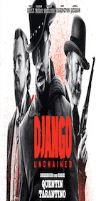
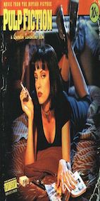
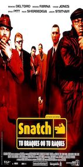

Killian Guacide
Coding Student
After a Bachelor Degree in international business, I've decided to broaden my horizons by learning how to code before entering my master degree in Creative Business & Social Innovation
See for yourselfMy Favorite movies
|  |
2012 - DjangoIn 1858, a bounty hunter named Schultz seeks out a slave named Django and buys him because he needs him to find some men he is looking for. After finding them, Django wants to find his wife, Broomhilda, who along with him were sold separately by his former owner for trying to escape. Schultz offers to help him if he chooses to stay with him and be his partner. Eventually they learn that she was sold to a plantation in Mississippi. Knowing they can't just go in and say they want her, they come up with a plan so that the owner will welcome them into his home and they can find a way. |
|  |
1994 - Pulp FictionJules Winnfield (Samuel L. Jackson) and Vincent Vega (John Travolta) are two hit men who are out to retrieve a suitcase stolen from their employer, mob boss Marsellus Wallace (Ving Rhames). Wallace has also asked Vincent to take his wife Mia (Uma Thurman) out a few days later when Wallace himself will be out of town. Butch Coolidge (Bruce Willis) is an aging boxer who is paid by Wallace to lose his fight. The lives of these seemingly unrelated people are woven together comprising of a series of funny, bizarre and uncalled-for incidents. |
|  |
2000 - SnatchTurkish and his close friend/accomplice Tommy get pulled into the world of match fixing by the notorious Brick Top. Things get complicated when the boxer they had lined up gets badly beaten by Mickey, a 'pikey' ( slang for an Irish Gypsy)- who comes into the equation after Turkish, an unlicensed boxing promoter wants to buy a caravan off the Irish Gypsies. They then try to convince Mickey not only to fight for them, but to lose for them too. Whilst all this is going on, a huge diamond heist takes place, and a fistful of motley characters enter the story, including 'Cousin Avi', 'Boris The Blade', 'Franky Four Fingers' and 'Bullet Tooth Tony'. Things go from bad to worse as it all becomes about the money, the guns, and the damned dog. |
About this page
This page has been coded during the FullStack program @LeWagon. That was probably the best experience of my entire life.